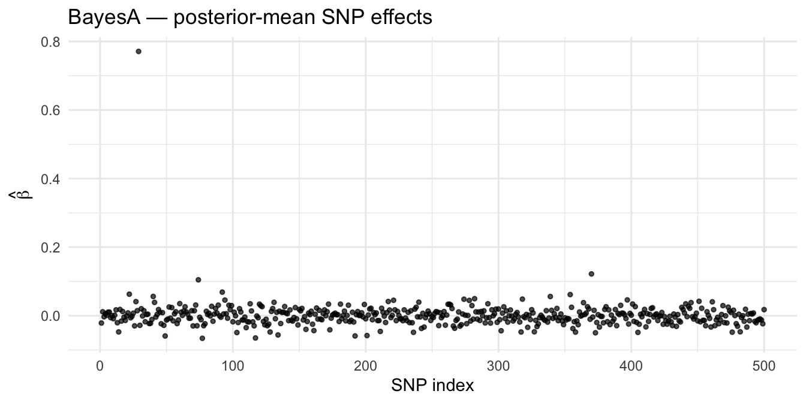

library(masbayes)
library(masreml) # for evaluate_prediction() — reused on Bayesian GEBVs
library(ggplot2)
library(knitr)
d <- load_data("large")
y <- setNames(d$pheno$y_cont_qtl_snp, d$pheno$id)
X_fixed <- stats::model.matrix(~ sex, data = d$pheno)
# Tutorial-scale MCMC params (same as masbayes/examples/04_gwas.R).
# Production runs should use n_iter = 20000, n_burn = 5000, n_thin = 5L.
mcmc <- list(n_iter = 2000L, n_burn = 1000L, n_thin = 5L, seed = 42L)Genomic prediction with masbayes
📐 Theory: Bayesian Alphabet · BayesA · BayesR · MCMC & EM · Continuous and Binary Trait
This tutorial fits Bayesian genomic prediction with masbayes: BayesA (Student-\(t\) prior, continuous shrinkage) and BayesR (4-class mixture prior, sparse selection), via both MCMC and EM, on SNP and phased microhaplotype data. Cross-validation in masbayes is manual — the package exposes single-fit functions only — so a worked-out CV loop is included.
Setup
Note
Production MCMC. The chunks below use n_iter = 2000 for fast tutorial rendering. For published analyses on real-data scale, use n_iter = 20000, n_burn = 5000, n_thin = 5L (or longer) and inspect trace plots before trusting posterior summaries.
SNP workflow
Build the design matrix W
The Bayesian fitters take a pre-standardised design matrix \(\mathbf{W}\); the per-column sum-of-squares \(\mathbf{w}'\mathbf{w}\) is computed internally, so you no longer pass it. construct_snp_matrix() returns a list — extract $W.
snp_pack <- construct_snp_matrix(d$snp, encoding = "vanRaden")
W_snp <- snp_pack$W
str(snp_pack)List of 4
$ W : num [1:200, 1:500] 0.22 0.22 0.22 0.22 0.22 0.22 0.22 0.22 0.22 0.22 ...
..- attr(*, "dimnames")=List of 2
.. ..$ : chr [1:200] "IND001" "IND002" "IND003" "IND004" ...
.. ..$ : chr [1:500] "SNP001" "SNP002" "SNP003" "SNP004" ...
$ freq: Named num [1:500] 0.39 0.475 0.198 0.39 0.388 ...
..- attr(*, "names")= chr [1:500] "SNP001" "SNP002" "SNP003" "SNP004" ...
$ n : int 200
$ p : int 500BayesA — full fit (MCMC)
BayesA assigns each SNP its own variance drawn from a scaled inverse-\(\chi^2\). The marginal prior on \(\beta_j\) is Student-\(t\) with heavy tails — markers in real QTL regions are allowed to keep large effects, while distant markers are shrunk hard.
============================================================
masbayes — BayesA with MCMC algorithm
============================================================
Response type : gaussian
Observations : n = 200, alleles p = 500
Runtime : 0.64 seconds
Heritability (h2): 0.534
MCMC Diagnostics
----------------------------------------
Parameter ESS Geweke Z
sigma2_e 200.0 -1.12
mu 3.1 -0.61
beta (median) 200.0 -0.09
----------------------------------------
Run summary(fit) for full report.
============================================================summary(fit_a_mcmc)
============================================================
masbayes Summary — BayesA with MCMC
============================================================
Model info
----------------------------------------
Response type : gaussian
Observations : n = 200
Alleles : p = 500
Fold id : 0
Runtime : 0.64 seconds
Training fit
----------------------------------------
h2 : 0.5341
sigma2_g : 0.9870
sigma2_e : 0.8611
accuracy (r) : 0.8596
R^2 : 0.7389
RMSE : 0.7403
bias (slope) : 1.348
Variance components
----------------------------------------
(BayesA: per-marker variances binned into tertiles)
small : mean=0.00405 range=[0.003489, 0.004291] n_markers=167
medium : mean=0.004488 range=[0.004292, 0.004694] n_markers=166
large : mean=0.006733 range=[0.004696, 0.2471] n_markers=167
MCMC diagnostics (ESS / Geweke Z)
----------------------------------------
sigma2_e ESS= 200 Z= -1.12
mu ESS= 3.09 Z= -0.6113
beta ESS[min/med/max]=88.94/ 200/660.4 |Z|max=4.418
sigma2_j ESS[min/med/max]=36.49/ 200/454.9 |Z|max=7.829
GEBV (training) quantiles
----------------------------------------
min=-1.693 Q1=-0.266 median=0.4122 Q3=0.9627 max=2.266
beta_hat
----------------------------------------
length=500 nonzero=500 mean|beta|=0.01866 max|beta|=0.7709
beta_samples : 200 x 500 (draws x alleles)
sigma2_j_samples : 200 x 500 (draws x alleles)
Top 10 alleles by |beta_hat|
----------------------------------------
rank index beta
1 29 0.77088220
2 370 0.12184246
3 74 0.10464504
4 92 0.06875296
5 77 -0.06593560
6 117 -0.06499813
7 22 0.06271719
8 354 0.06160971
9 49 -0.05919642
10 192 -0.05910003
============================================================Inspect the posterior mean of marker effects:
ggplot(data.frame(idx = seq_along(fit_a_mcmc$beta_hat),
beta = fit_a_mcmc$beta_hat),
aes(x = idx, y = beta)) +
geom_point(alpha = 0.7, size = 1) +
labs(x = "SNP index", y = expression(hat(beta)),
title = "BayesA — posterior-mean SNP effects") +
theme_minimal()
kable(data.frame(metric = c("Heritability (h²)",
"Residual variance",
"Genetic variance"),
value = c(fit_a_mcmc$h2,
fit_a_mcmc$sigma2_e,
fit_a_mcmc$sigma2_g)),
digits = 4,
caption = "BayesA — variance components and h²")| metric | value |
|---|---|
| Heritability (h²) | 0.5341 |
| Residual variance | 0.8611 |
| Genetic variance | 0.9870 |
Predict on held-out candidates
train_idx <- d$train_idx
test_idx <- d$test_idx
fit_a_train <- run_bayesa(
w = W_snp[train_idx, , drop = FALSE],
y = y[train_idx],
X = X_fixed[train_idx, , drop = FALSE],
marker_type = "snp",
nu = 4.5,
sigma2_g = var(y[train_idx]) * 0.5,
sigma2_e_init = var(y[train_idx]) * 0.5,
method = "mcmc",
response_type = "gaussian",
mcmc_params = mcmc,
verbose = FALSE
)
============================================================
masbayes — BayesA with MCMC algorithm
============================================================
Response type : gaussian
Observations : n = 160, alleles p = 500
Runtime : 0.55 seconds
Heritability (h2): 0.493
MCMC Diagnostics
----------------------------------------
Parameter ESS Geweke Z
sigma2_e 200.0 -0.90
mu 3.0 -0.63
beta (median) 200.0 -0.06
----------------------------------------
Run summary(fit) for full report.
============================================================pred_a <- predict(
fit_a_train,
newdata = W_snp[test_idx, , drop = FALSE],
X_new = X_fixed[test_idx, , drop = FALSE],
y_new = y[test_idx]
)
kable(as.data.frame(pred_a$metrics),
digits = 4,
caption = "BayesA — held-out test accuracy")| R2 | RMSE | accuracy | bias |
|---|---|---|---|
| 0.3451 | 1.1687 | 0.5874 | 1.2739 |
BayesA — EM (MAP, faster)
For point estimates without posterior samples, switch method = "em". EM converges in tens of iterations; MCMC typically wants thousands.
============================================================
masbayes — BayesA with EM algorithm
============================================================
Response type : gaussian
Observations : n = 200, alleles p = 500
Runtime : 0.01 seconds
Heritability (h2): 0.514
EM Convergence : completed in fixed iterations (see fit$em_params)
Run summary(fit) for full report.
============================================================summary(fit_a_em)
============================================================
masbayes Summary — BayesA with EM
============================================================
Model info
----------------------------------------
Response type : gaussian
Observations : n = 200
Alleles : p = 500
Fold id : 0
Runtime : 0.01 seconds
Training fit
----------------------------------------
h2 : 0.5142
sigma2_g : 0.6797
sigma2_e : 0.6422
accuracy (r) : 0.8235
R^2 : 0.6781
RMSE : 0.8014
bias (slope) : 1.331
Variance components
----------------------------------------
(BayesA: per-marker variances binned into tertiles)
small : mean=0.003893 range=[0.003846, 0.003921] n_markers=167
medium : mean=0.003954 range=[0.003922, 0.003991] n_markers=166
large : mean=0.005482 range=[0.003992, 0.228] n_markers=167
EM run — no MCMC diagnostics.
GEBV (training) quantiles
----------------------------------------
min=-1.639 Q1=-0.2604 median=0.423 Q3=0.9963 max=2.213
beta_hat
----------------------------------------
length=500 nonzero=500 mean|beta|=0.01526 max|beta|=0.881
beta_samples : 1 x 500 (draws x alleles)
sigma2_j_samples : 1 x 500 (draws x alleles)
Top 10 alleles by |beta_hat|
----------------------------------------
rank index beta
1 29 0.88100098
2 370 0.08001892
3 74 0.06652395
4 339 0.05915733
5 201 -0.05121759
6 40 0.04720630
7 49 -0.04633735
8 134 -0.04627253
9 192 -0.04479819
10 128 -0.04339833
============================================================EM returns the MAP \(\hat\beta\) and point estimates of variance components, but no posterior intervals. Use MCMC when you need uncertainty quantification (or PIPs, for BayesR).
BayesR — full fit (MCMC)
BayesR replaces the heavy-tailed continuous prior with a discrete 4-class mixture (zero / small / medium / large). pi_vec is the prior mixture proportions; the conventional starting point is c(0.95, 0.02, 0.02, 0.01). sigma2_ah sets the total genetic variance scale.
============================================================
masbayes — BayesR with MCMC algorithm
============================================================
Response type : gaussian
Observations : n = 200, alleles p = 500
Runtime : 0.74 seconds
Heritability (h2): 0.405
MCMC Diagnostics
----------------------------------------
Parameter ESS Geweke Z
sigma2_e 20.5 -0.15
mu 4.5 -3.12
beta (median) 200.0 0.01
----------------------------------------
Run summary(fit) for full report.
============================================================summary(fit_r_mcmc)
============================================================
masbayes Summary — BayesR with MCMC
============================================================
Model info
----------------------------------------
Response type : gaussian
Observations : n = 200
Alleles : p = 500
Fold id : 0
Runtime : 0.74 seconds
Training fit
----------------------------------------
h2 : 0.4050
sigma2_g : 0.7082
sigma2_e : 1.0402
accuracy (r) : 0.8063
R^2 : 0.65
RMSE : 0.8712
bias (slope) : 1.54
Variance components
----------------------------------------
zero : pi=0.2862
small : mean=0.0002643 95% CI=[4.257e-05, 0.001589] pi=0.1629
medium : mean=0.002643 95% CI=[0.0004257, 0.01589] pi=0.2863
large : mean=0.02643 95% CI=[0.004257, 0.1589] pi=0.2645
MCMC diagnostics (ESS / Geweke Z)
----------------------------------------
sigma2_e ESS= 20.5 Z= -0.146
mu ESS= 4.538 Z= -3.118
beta ESS[min/med/max]=2.862/ 200/795.6 |Z|max=4.071
sigma2_small ESS= 6.503 Z= -0.8128
sigma2_medium ESS= 6.503 Z= -0.8128
sigma2_large ESS= 6.503 Z= -0.8128
pi ESS[min/med/max]=4.675/5.965/7.532 |Z|max=0.7672
GEBV (training) quantiles
----------------------------------------
min=-1.31 Q1=-0.09057 median=0.4095 Q3=0.8514 max=1.998
beta_hat
----------------------------------------
length=500 nonzero=500 mean|beta|=0.01257 max|beta|=0.336
beta_samples : 200 x 500 (draws x alleles)
Top 10 alleles by |beta_hat|
----------------------------------------
rank index beta
1 29 0.33595895
2 370 0.12366678
3 74 0.07776477
4 22 0.06313945
5 339 0.06130299
6 354 0.05779764
7 201 -0.05618347
8 451 0.05493107
9 117 -0.04944762
10 282 0.04791903
============================================================The posterior of \(\pi\) tells you how concentrated the trait architecture is — a high \(\hat\pi_0\) (fraction in the zero class) indicates a sparse architecture; a low \(\hat\pi_0\) a polygenic one:
kable(as.data.frame(fit_r_mcmc$variance_components),
digits = 4,
caption = "BayesR — class-wise variance components")| small.mean | small.lower | small.upper | medium.mean | medium.lower | medium.upper | large.mean | large.lower | large.upper | pi.zero | pi.small | pi.medium | pi.large |
|---|---|---|---|---|---|---|---|---|---|---|---|---|
| 3e-04 | 0 | 0.0016 | 0.0026 | 4e-04 | 0.0159 | 0.0264 | 0.0043 | 0.1589 | 0.2862 | 0.1629 | 0.2863 | 0.2645 |
For per-marker GWAS-style output (PIPs and WPPA windows), pass map and one of windsize / windnum — see the GWAS with masbayes page.
BayesR — EM
============================================================
masbayes — BayesR with EM algorithm
============================================================
Response type : gaussian
Observations : n = 200, alleles p = 500
Runtime : 0.03 seconds
Heritability (h2): 0.414
EM Convergence : completed in fixed iterations (see fit$em_params)
Run summary(fit) for full report.
============================================================summary(fit_r_em)
============================================================
masbayes Summary — BayesR with EM
============================================================
Model info
----------------------------------------
Response type : gaussian
Observations : n = 200
Alleles : p = 500
Fold id : 0
Runtime : 0.03 seconds
Training fit
----------------------------------------
h2 : 0.4143
sigma2_g : 0.6783
sigma2_e : 0.9588
accuracy (r) : 0.6787
R^2 : 0.4606
RMSE : 0.9792
bias (slope) : 1.098
Variance components
----------------------------------------
zero : pi=0.9468
small : mean=9.516e-06 95% CI=[NA, NA] pi=0.01997
medium : mean=9.449e-05 95% CI=[NA, NA] pi=0.02034
large : mean=0.2646 95% CI=[NA, NA] pi=0.01288
EM run — no MCMC diagnostics.
GEBV (training) quantiles
----------------------------------------
min=-1.575 Q1=-0.1659 median=0.4345 Q3=0.9745 max=2.094
beta_hat
----------------------------------------
length=500 nonzero=500 mean|beta|=0.005326 max|beta|=0.9292
beta_samples : 1 x 500 (draws x alleles)
Top 10 alleles by |beta_hat|
----------------------------------------
rank index beta
1 29 0.929194515
2 370 0.567812832
3 201 -0.410349707
4 77 -0.344670673
5 74 0.080019085
6 22 0.026235356
7 354 0.024858231
8 92 0.017280958
9 282 0.015901816
10 339 0.007803829
============================================================EM-BayesR returns hard class assignments and a MAP \(\hat\beta\). It is the right choice for very large \(p\) where MCMC mixing is the bottleneck, but loses PIP and posterior intervals.
Cross-validation (manual loop)
masbayes does not provide a cv_* wrapper — write the loop explicitly. The pattern below uses BayesA but swap to run_bayesr() without changing the scaffold (add pi_vec / sigma2_ah).
set.seed(42L)
n <- nrow(W_snp)
K <- 5L
folds <- sample(rep(seq_len(K), length.out = n))
gebv_test <- rep(NA_real_, n)
for (k in seq_len(K)) {
tr <- which(folds != k)
te <- which(folds == k)
W_tr <- W_snp[tr, , drop = FALSE]
fit_k <- run_bayesa(
w = W_tr,
y = y[tr],
X = X_fixed[tr, , drop = FALSE],
marker_type = "snp",
nu = 4.5,
sigma2_g = var(y[tr]) * 0.5,
sigma2_e_init = var(y[tr]) * 0.5,
method = "mcmc",
response_type = "gaussian",
mcmc_params = list(n_iter = 1000L, n_burn = 500L, n_thin = 5L,
seed = 42L + k),
verbose = FALSE
)
pred_k <- predict(
fit_k,
newdata = W_snp[te, , drop = FALSE],
X_new = X_fixed[te, , drop = FALSE]
)
gebv_test[te] <- pred_k$GEBV
}
============================================================
masbayes — BayesA with MCMC algorithm
============================================================
Response type : gaussian
Observations : n = 160, alleles p = 500
Runtime : 0.29 seconds
Heritability (h2): 0.515
MCMC Diagnostics
----------------------------------------
Parameter ESS Geweke Z
sigma2_e 100.0 -2.42
mu 2.4 -14.02
beta (median) 100.0 0.10
----------------------------------------
Run summary(fit) for full report.
============================================================
============================================================
masbayes — BayesA with MCMC algorithm
============================================================
Response type : gaussian
Observations : n = 160, alleles p = 500
Runtime : 0.26 seconds
Heritability (h2): 0.492
MCMC Diagnostics
----------------------------------------
Parameter ESS Geweke Z
sigma2_e 69.8 -3.98
mu 1.7 -0.24
beta (median) 100.0 0.07
----------------------------------------
Run summary(fit) for full report.
============================================================
============================================================
masbayes — BayesA with MCMC algorithm
============================================================
Response type : gaussian
Observations : n = 160, alleles p = 500
Runtime : 0.26 seconds
Heritability (h2): 0.568
MCMC Diagnostics
----------------------------------------
Parameter ESS Geweke Z
sigma2_e 100.0 0.25
mu 7.3 -0.13
beta (median) 100.0 0.02
----------------------------------------
Run summary(fit) for full report.
============================================================
============================================================
masbayes — BayesA with MCMC algorithm
============================================================
Response type : gaussian
Observations : n = 160, alleles p = 500
Runtime : 0.26 seconds
Heritability (h2): 0.506
MCMC Diagnostics
----------------------------------------
Parameter ESS Geweke Z
sigma2_e 56.4 0.54
mu 4.0 3.32
beta (median) 100.0 -0.07
----------------------------------------
Run summary(fit) for full report.
============================================================
============================================================
masbayes — BayesA with MCMC algorithm
============================================================
Response type : gaussian
Observations : n = 160, alleles p = 500
Runtime : 0.26 seconds
Heritability (h2): 0.518
MCMC Diagnostics
----------------------------------------
Parameter ESS Geweke Z
sigma2_e 52.3 -0.18
mu 3.4 1.86
beta (median) 100.0 0.10
----------------------------------------
Run summary(fit) for full report.
============================================================kable(evaluate_prediction(gebv = gebv_test, y = y),
digits = 4,
caption = "Manual 5-fold CV — BayesA")| r_test_y | r_test_g | bias | r_MG | AUC | RMSE |
|---|---|---|---|---|---|
| 0.5283 | NA | 0.9441 | NA | NA | 1.1289 |
The chunk uses a shortened n_iter = 1000 to keep the CV loop fast. Each fold sets a different seed so the chains explore independently.
Binary trait
For 0/1 phenotypes, set response_type = "binary". Albert-Chib data augmentation samples a latent liability variable; the fit object carries prob_train and (after predict()) prob_test with \(\hat{p}_i = P(y_i = 1)\).
============================================================
masbayes — BayesA with MCMC algorithm (binary trait)
============================================================
Response type : binary
Observations : n = 200, alleles p = 500
Runtime : 0.71 seconds
Heritability (h2): 0.529
MCMC Diagnostics
----------------------------------------
Parameter ESS Geweke Z
sigma2_e NA NA
mu 2.3 10.02
beta (median) 200.0 -0.02
----------------------------------------
Run summary(fit) for full report.
============================================================summary(fit_a_bin)
============================================================
masbayes Summary — BayesA with MCMC (binary trait)
============================================================
Model info
----------------------------------------
Response type : binary
Observations : n = 200
Alleles : p = 500
Fold id : 0
Runtime : 0.71 seconds
Training fit (observed/probability scale)
----------------------------------------
h2 : 0.5291
sigma2_g : 1.1238
sigma2_e : 1.0000
AUC : 0.9535
R^2 : 0.6287
RMSE : 0.3299
bias (slope) : 1.469
Variance components
----------------------------------------
(BayesA: per-marker variances binned into tertiles)
small : mean=0.004681 range=[0.003961, 0.004959] n_markers=167
medium : mean=0.005185 range=[0.004961, 0.005415] n_markers=166
large : mean=0.00728 range=[0.005416, 0.1951] n_markers=167
MCMC diagnostics (ESS / Geweke Z)
----------------------------------------
sigma2_e ESS= NA Z= NA
mu ESS= 2.326 Z= 10.02
beta ESS[min/med/max]=34.46/ 200/648.5 |Z|max=4.356
sigma2_j ESS[min/med/max]=52.11/ 200/390.3 |Z|max=4.488
GEBV (training) quantiles
----------------------------------------
min=-1.625 Q1=-0.6671 median=0.004454 Q3=0.6683 max=1.629
beta_hat
----------------------------------------
length=500 nonzero=500 mean|beta|=0.01695 max|beta|=0.7837
beta_samples : 200 x 500 (draws x alleles)
sigma2_j_samples : 200 x 500 (draws x alleles)
Top 10 alleles by |beta_hat|
----------------------------------------
rank index beta
1 29 0.78374437
2 370 0.14233479
3 460 -0.06755601
4 267 -0.06403604
5 134 -0.06121135
6 40 0.06000332
7 124 -0.05833225
8 269 -0.05722354
9 339 0.05698483
10 367 0.05162280
============================================================fit_r_bin <- run_bayesr(
w = W_snp,
y = y_bin,
X = X_fixed,
marker_type = "snp",
pi_vec = c(0.95, 0.02, 0.02, 0.01),
sigma2_ah = 1.0,
sigma2_e_init = 1.0,
method = "mcmc",
response_type = "binary",
mcmc_params = mcmc,
verbose = FALSE
)
============================================================
masbayes — BayesR with MCMC algorithm (binary trait)
============================================================
Response type : binary
Observations : n = 200, alleles p = 500
Runtime : 0.73 seconds
Heritability (h2): 0.423
MCMC Diagnostics
----------------------------------------
Parameter ESS Geweke Z
sigma2_e NA NA
mu 1.5 3.63
beta (median) 200.0 -0.10
----------------------------------------
Run summary(fit) for full report.
============================================================summary(fit_r_bin)
============================================================
masbayes Summary — BayesR with MCMC (binary trait)
============================================================
Model info
----------------------------------------
Response type : binary
Observations : n = 200
Alleles : p = 500
Fold id : 0
Runtime : 0.73 seconds
Training fit (observed/probability scale)
----------------------------------------
h2 : 0.4227
sigma2_g : 0.7321
sigma2_e : 1.0000
AUC : 0.9471
R^2 : 0.5881
RMSE : 0.3673
bias (slope) : 1.873
Variance components
----------------------------------------
zero : pi=0.1893
small : mean=7.383e-05 95% CI=[4.108e-06, 0.0002231] pi=0.1404
medium : mean=0.0007383 95% CI=[4.108e-05, 0.002231] pi=0.1159
large : mean=0.007383 95% CI=[0.0004108, 0.02231] pi=0.5544
MCMC diagnostics (ESS / Geweke Z)
----------------------------------------
sigma2_e ESS= NA Z= NA
mu ESS= 1.486 Z= 3.633
beta ESS[min/med/max]=7.112/ 200/ 1257 |Z|max=3.709
sigma2_small ESS= 5.559 Z= 0.5775
sigma2_medium ESS= 5.559 Z= 0.5775
sigma2_large ESS= 5.559 Z= 0.5775
pi ESS[min/med/max]=4.627/13.76/17.29 |Z|max=1.609
GEBV (training) quantiles
----------------------------------------
min=-1.202 Q1=-0.4273 median=-0.018 Q3=0.4603 max=1.214
beta_hat
----------------------------------------
length=500 nonzero=500 mean|beta|=0.0128 max|beta|=0.1192
beta_samples : 200 x 500 (draws x alleles)
Top 10 alleles by |beta_hat|
----------------------------------------
rank index beta
1 29 0.11916440
2 370 0.07688730
3 267 -0.05577103
4 367 0.05570146
5 339 0.05255388
6 134 -0.05068550
7 396 -0.05039195
8 201 -0.04381083
9 451 0.04339501
10 84 0.04188403
============================================================
Important
EM is gaussian-only. Both run_bayesa() and run_bayesr() error when method = "em" is combined with response_type = "binary" — the EM derivation does not extend to the Albert-Chib augmentation. Use method = "mcmc" for binary traits.
Microhaplotype workflow
For phased microhaplotype data, the design matrix is built with construct_wah_matrix() (Wαh coding from Da 2015), and marker_type = "multiallelic" selects the corresponding variance scaling for \(S\) (BayesA) and per-class scaling (BayesR).
y_mh <- setNames(d$pheno$y_cont_qtl_mh, d$pheno$id)
wah <- construct_wah_matrix(
hap_matrix = d$mh,
colnames = attr(d$mh, "block_id"),
allele_freq_filtered = d$allele_freq
)
W_mh <- wah$W_ah
# BayesA — MCMC
fit_a_mh <- run_bayesa(
w = W_mh,
y = y_mh,
X = X_fixed,
marker_type = "multiallelic",
nu = 4.5,
sigma2_g = var(y_mh) * 0.5,
sigma2_e_init = var(y_mh) * 0.5,
method = "mcmc",
response_type = "gaussian",
mcmc_params = mcmc,
verbose = FALSE
)
============================================================
masbayes — BayesA with MCMC algorithm
============================================================
Response type : gaussian
Observations : n = 200, alleles p = 735
Runtime : 0.83 seconds
Heritability (h2): 0.390
MCMC Diagnostics
----------------------------------------
Parameter ESS Geweke Z
sigma2_e 157.7 2.18
mu 2.8 -4.54
beta (median) 200.0 0.00
----------------------------------------
Run summary(fit) for full report.
============================================================summary(fit_a_mh)
============================================================
masbayes Summary — BayesA with MCMC
============================================================
Model info
----------------------------------------
Response type : gaussian
Observations : n = 200
Alleles : p = 735
Fold id : 0
Runtime : 0.83 seconds
Training fit
----------------------------------------
h2 : 0.3897
sigma2_g : 0.6720
sigma2_e : 1.0523
accuracy (r) : 0.8854
R^2 : 0.784
RMSE : 0.8176
bias (slope) : 1.568
Variance components
----------------------------------------
(BayesA: per-marker variances binned into tertiles)
small : mean=0.005726 range=[0.004783, 0.006056] n_markers=245
medium : mean=0.006344 range=[0.006059, 0.006641] n_markers=245
large : mean=0.007751 range=[0.006647, 0.0389] n_markers=245
MCMC diagnostics (ESS / Geweke Z)
----------------------------------------
sigma2_e ESS= 157.7 Z= 2.181
mu ESS= 2.846 Z= -4.538
beta ESS[min/med/max]=50.31/ 200/ 1543 |Z|max= 4.26
sigma2_j ESS[min/med/max]=72.67/ 200/397.7 |Z|max=4.524
GEBV (training) quantiles
----------------------------------------
min=-2.005 Q1=-0.2345 median=0.2687 Q3=0.8342 max=2.637
beta_hat
----------------------------------------
length=735 nonzero=735 mean|beta|=0.01929 max|beta|=0.2333
beta_samples : 200 x 735 (draws x alleles)
sigma2_j_samples : 200 x 735 (draws x alleles)
Top 10 alleles by |beta_hat|
----------------------------------------
rank index beta
1 18 -0.23325622
2 584 -0.19168651
3 696 -0.16713166
4 230 0.15198208
5 583 -0.10423082
6 694 0.09229555
7 229 -0.07679595
8 16 0.07652760
9 732 -0.07459275
10 549 0.07394207
============================================================
============================================================
masbayes — BayesR with MCMC algorithm
============================================================
Response type : gaussian
Observations : n = 200, alleles p = 735
Runtime : 0.70 seconds
Heritability (h2): 0.420
MCMC Diagnostics
----------------------------------------
Parameter ESS Geweke Z
sigma2_e 110.3 -1.34
mu 1.5 -6.98
beta (median) 200.0 0.01
----------------------------------------
Run summary(fit) for full report.
============================================================summary(fit_r_mh)
============================================================
masbayes Summary — BayesR with MCMC
============================================================
Model info
----------------------------------------
Response type : gaussian
Observations : n = 200
Alleles : p = 735
Fold id : 0
Runtime : 0.70 seconds
Training fit
----------------------------------------
h2 : 0.4203
sigma2_g : 0.7546
sigma2_e : 1.0407
accuracy (r) : 0.8605
R^2 : 0.7404
RMSE : 0.8295
bias (slope) : 1.438
Variance components
----------------------------------------
zero : pi=0.6296
small : mean=0.001608 95% CI=[0.000958, 0.002833] pi=0.2388
medium : mean=0.01608 95% CI=[0.00958, 0.02833] pi=0.0896
large : mean=0.1608 95% CI=[0.0958, 0.2833] pi=0.04202
MCMC diagnostics (ESS / Geweke Z)
----------------------------------------
sigma2_e ESS= 110.3 Z= -1.344
mu ESS= 1.497 Z= -6.977
beta ESS[min/med/max]=33.61/ 200/ 1076 |Z|max=3.708
sigma2_small ESS= 39.48 Z= 0.1328
sigma2_medium ESS= 39.48 Z= 0.1328
sigma2_large ESS= 39.48 Z= 0.1328
pi ESS[min/med/max]=3.889/5.538/50.49 |Z|max=3.639
GEBV (training) quantiles
----------------------------------------
min=-2.018 Q1=-0.2891 median=0.3104 Q3=0.8567 max=3.209
beta_hat
----------------------------------------
length=735 nonzero=735 mean|beta|=0.01526 max|beta|= 0.62
beta_samples : 200 x 735 (draws x alleles)
Top 10 alleles by |beta_hat|
----------------------------------------
rank index beta
1 18 -0.6200014
2 584 -0.5238726
3 696 -0.5102360
4 230 0.3171392
5 521 -0.2030824
6 439 -0.1976368
7 583 -0.1970278
8 732 -0.1555775
9 691 0.1473378
10 509 0.1276516
============================================================Working with the fit object
Key accessors on the returned object:
fit_r_mcmc$beta_hat # posterior-mean marker effects (length p)
fit_r_mcmc$GEBV # aggregated total GEBV (length n)
fit_r_mcmc$alpha_hat # fixed-effect estimates
fit_r_mcmc$h2 # heritability
fit_r_mcmc$variance_components # per-class variance posterior
fit_r_mcmc$beta_samples # MCMC trace, n_kept x p (MCMC only)summary.masbayes_bayesr formats these into a one-screen banner; predict.masbayes_bayesr(object, newdata, X_new, y_new) returns the test-set GEBV and (for binary) prob.
See also
-
run_bayesa()·run_bayesr()·construct_snp_matrix()·construct_wah_matrix() - Theory → BayesA and BayesR
- Genomic prediction with masreml — frequentist counterpart
- GWAS with masbayes — extract PIPs from a BayesR fit